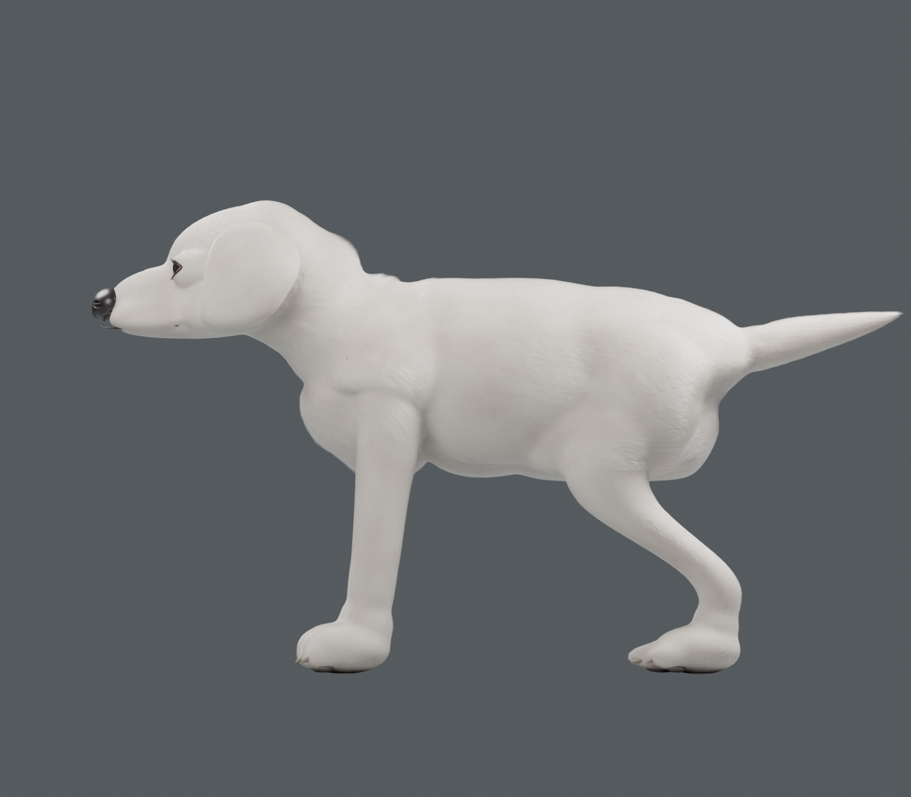

BLENDER · 실제 모델 렌더
흰색 래브라도 강아지 제작 시안
세 번째 시안은 다운받았던 골든 리트리버의 측면을 참고해 목·등·가슴 밑선과 뒷다리 각도를 수정했습니다. 시안을 바꿔 이전 모델과 같은 방향으로 비교할 수 있습니다.
미완성 시안입니다. 포토리얼 외형과 변형용 프로덕션 토폴로지는 미충족입니다. v3는 v2의 재질·털을 이어받은 체형 수정본으로, 털 없는 체형 검토와 최종 렌더를 제공합니다.

v3 · 측면 체형 수정 / 6 · 조명과 렌더 / 측면
구현한 항목과 남은 작업
| 형상 | v1은 자동 쿼드 케이지, v2는 눈꺼풀과 몸체를 연결한 정적 삼각형 메시, v3는 그 메시의 측면 체형을 수정한 시안입니다. 눈·각막·코·콧구멍·입술·귀 내부·발톱·발바닥·잇몸·혀를 구성했습니다. 해부학 전문가의 검수는 받지 않았습니다. |
|---|
| 털 | Blender Hair Curves. 주둥이·발·머리·몸통·가슴의 길이와 흐름을 구분하고 수염·눈썹 가이드를 분리했습니다. |
|---|
| 재질 | 공유 UV 아틀라스의 4K Base Color·Roughness·Normal·Displacement 파일을 제공합니다. |
|---|
| 미충족 | 상업용 포토리얼 외형, 얼굴·관절의 수작업 엣지 흐름 및 자연스러운 변형 검증. 정적 외형 시안이며 애니메이션은 없습니다. |
|---|
| 검사 범위 | 개별 메시의 경계·비매니폴드·면 방향·중복 면·면 교차와 텍스처 경로를 검사했습니다. 서로 다른 해부학 오브젝트 사이의 모든 교차를 없앴다는 의미는 아닙니다. 수치는 검수 기록을 참고하세요. |
|---|
기준: 사용자가 지정한 참고 에셋. 모델과 텍스처는 이 작업에서 제작했습니다. 현재 웹사이트 운동장에 적용된 모델은 아닙니다.